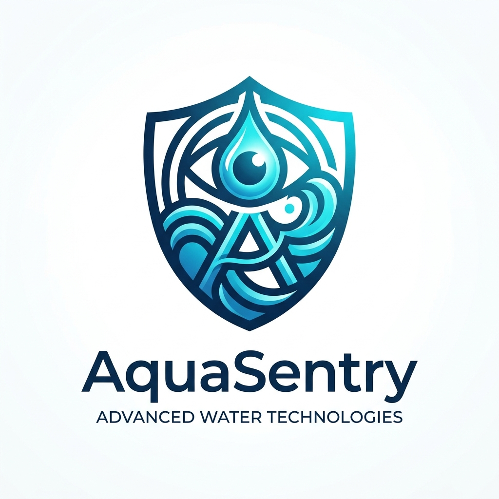

Hardware-Enabled SaaS model with localized Indian minimum-wage assembly.
Our revenue architecture utilizes a highly-scalable Hardware-Enabled SaaS approach designed specifically for the Indian socio-economic landscape. By training local vocational labor at Indian minimum wage standards to assemble catamaran nodes, we drastically reduce our Cost of Goods Sold (COGS), yielding massive margins while keeping end-user prices disruptive.
Focusing aggressively on Maharashtra's vulnerable groundwater districts and expanding urban housing complexes:
Quarterly profit accrual across hardware margins and compounding SaaS.
Why AquaSentry disrupts the water testing status quo.
A direct analysis of our primary competitive friction points, demonstrating why AquaSentry dominates the early-stage environmental screening market:
| Market & Tech Feature | AquaSentry | AccuSense |
|---|---|---|
| Commercial Availability | Ready to deploy. Immediate field impact. | Does not sell till now. Stuck in R&D. |
| Mobility & Environment | In-water autonomous catamaran robot. Maps full water bodies. | Stationary / Lab-bound. Cannot navigate in water. |
| Cost Structure | Disruptively affordable (₹5,000 per node). | Prohibitively expensive (traditional benchtop pricing). |
| Data Output | Live, geotagged 3D contamination contour maps. | Single-point, isolated laboratory readings. |
| Predictive AI / Neural Inference | AquaNet-V1 Deep Neural Net (5→8→6→4 MLP, 23 nodes, 112 synapses, 99.70% synthetic benchmark accuracy, 5-parameter hydrogeochemical covariance, <1.5 ms edge inference). | None. Static linear calibration slope only. Zero cross-parameter intelligence. |
Global and domestic market drivers for decentralized water surveillance.
Heavy metals screening niche ($1.2B) within global water quality testing.
The Global Water Quality Monitoring market is projected to reach $7.5 Billion by 2028, growing at a CAGR of roughly 6.5%. Specifically, the segment for heavy metals (like Arsenic) and environmental surface water testing represents a highly underserved ~$1.2 Billion niche globally, with India representing one of the fastest-growing sectors.